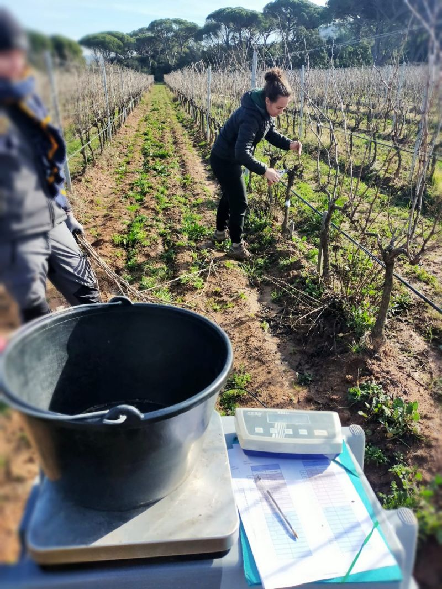

Poids des bois de taille
Objectif
Évaluer la vigueur de la vigne par la mesure du poids des bois de taille après la chute des feuilles.
Principe de la mesure
La vigueur résulte de l’activité métabolique des organes en croissance, et se traduit par une intensité de respiration et de la vitesse de croissance [1]. Une vigne vigoureuse aura tendance à produire plus de grappes et de feuilles, ce qui peut avoir un impact sur le rendement et la qualité des raisins. L’évaluation de la vigueur est complémentaire à la mesure des composantes du rendement (nombre de grappes par cep, poids des grappes, poids par cep).
La méthode consiste à peser les bois de taille (sarments) produits par la vigne après la chute des feuilles. Le poids total des bois de taille d’un cep est une conséquence de la croissance des rameaux pendant la saison végétative.
Champagnol (1984) propose les définitions suivantes:
- L’expression végétative est la production totale de biomasse (sarments, feuilles, fruits, racines, troncs) de la vigne lors d’un cycle végétatif [1].
- La vigueur résulte de l’activité métabolique des organes en croissance, et se traduit par une intensité de respiration et de la vitesse de croissance [1]
Selon ces définitions:
- le poids des poids de taille est un indicateur de l’expression végétative.
- le poids moyen d’un sarment est un indicateur de la vigueur de la vigne.
D’autres auteurs ne font pas cette distinction, et assimilent le poids des poids de taille à la vigueur de la vigne. De fait, poids total des bois de taille et poids moyen d’un sarment sont généralement bien corrélés. On retiendra qu’il est utile et facile de mesurer ces deux indicateurs lors d’une pesée de bois de taille en comptant le nombre de sarments par cep.
Dans le cas des vignes rognées, une partie de la matière sèche produite par la vigne n’est pas comptabilisée. La pesée des bois de taille reste toutefois un proxy intégratif de l’expression végétative de la vigne.
Sur le terrain
Échantillonnage
Nombre d’observations
Généralement, 10 ceps par parcelle élémentaire sont nécessaires, avec un minimum de 30 ceps par modalité.
Ceps à observer
- Prendre des ceps représentatifs de la parcelle (ou les ceps qui sont observés par ailleurs)
- Exclure de la mesure les ceps malades et les ceps voisins des manquants.
- Ne pas mesurer les ceps en bordure de rangs.
Sarments à peser
Ne sont pesés que les sarments de l’année (exemple : dans le cas d’une taille guyot, la baguette n’est pas pesée). Les sarments cassés vers la base, les petits sarments (longueur inférieure à 10 cm) ne sont pas pesés.
Mesure
Réalisation
Compter le nombre de sarments par cep.
Réaliser la taille des ceps sélectionnés en respectant les pratiques habituelles de la parcelle.
Regrouper tous les sarments de chaque cep dans un fagot distinct, puis procéder à la pesée de chaque fagot.
Outils
Prévoir balance de terrain, sécateurs et équipements de protection.

Période de mesure
La pesée des bois de taille se fait en période de repos hivernal, après chute complète des feuilles et sur des ceps non pré-taillés. Vérifier les conditions météorologiques prévues pour réaliser la mesure dans de bonnes conditions.
Aspects pratiques
Il faut compter environ 12 ceps par heure et par personne.
La taille présente des risques de coupures en lien avec l’utilisation des sécateurs, attention si vous utilisez des vieux modèles de sécateurs électriques.
D’autre part, le tirage des bois peut aussi présenter un risque de blessures oculaires : il est recommandé de porter des lunettes de protection.
Traitement des résultats
Les noms des variables dans le référentiel de la crop ontology VITIS356 sont indiqués entre parenthèse, avec un lien vers l’identifiant de la variable.
Variables brutes
Le poids total des sarments par cep, exprimé en kg/cep (PRUN_FW_PLANT), et le nombre total de sarments par cep (NB_CANES_PLANT).
Variables calculées
Un poids moyen du sarment peut être calculé en divisant le poids total des bois de taille par le nombre de sarments.
Le poids de bois de taille peut être exprimé en kg/m² de sol (PRUN_FW_M2) en prenant en compte la densité de plantation.
\[ PRUN\_FW\_M2 = PRUN\_FW\_PLANT * (densité_{ha} /10 000) \]
Le nombre de sarments peut lui aussi être exprimé par m² de sol (NB_CANES_M2) en prenant en compte la densité de plantation. Cette variable n’existe pas encore dans la Vitis Ontology.
\[ NB\_CANES\_M2 = NB\_CANES\_PLANT * (densité_{ha} /10 000) \]
L’expression par m² de sol permet les comparaisons entre parcelles quand les densités de plantation sont différentes.
Interprétation des résultats
Expression végétative et vigueur sont directement liées à l’activité photosynthétique et à la répartition des ressources assimilées (sucres, nutriments) entre les différents organes. Une vigueur excessive reflète souvent une allocation disproportionnée des ressources vers la croissance des rameaux et des feuilles, au détriment de la maturation des baies. À l’inverse, une vigueur trop faible peut signaler un stress hydrique, nutritionnel ou un épuisement des réserves, limitant les capacités de production et de survie de la plante.
L’indice Ravaz IR est un indicateur d’équilibre physiologique de la vigne, calculé comme le rapport du rendement à la récolte sur le poids de la taille. Néanmoins les seuils d’interprétation de l’indice de Ravaz peuvent être variables selon les auteurs [2].
\[ IR = \frac{Rendement_{kg/cep}}{PBT_{kg/cep}} \]
L’interprétation doit tenir compte du matériel végétal (cépage surtout et porte-greffe), qui a une forte influence sur la vigueur.